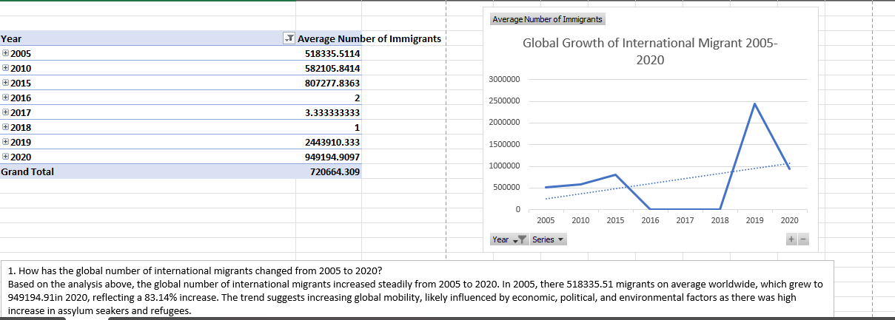
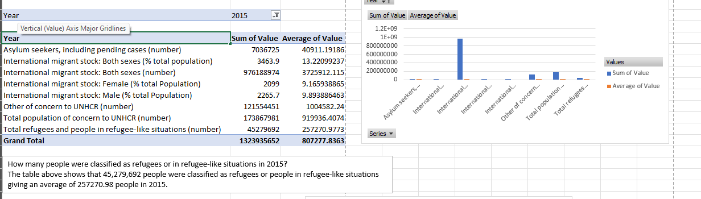

Project Overview
This project delves into the factors influencing global migration patterns, with a specific focus on Sub-Saharan Africa. Using data analysis techniques, the project aims to identify the key drivers of migration, such as economic conditions, social factors, and environmental changes.
Data Analysis
The analysis involves examining various datasets to understand migration trends. This includes:
- Analyzing migration flow data to identify major migration routes.
- Exploring economic indicators to assess the impact of economic conditions on migration.
- Investigating social factors, such as conflict and political instability, as drivers of displacement.
- Evaluating the role of environmental changes, like climate change, in migration patterns.
The findings of the analysis will be presented through visualizations and reports, providing insights into the complex dynamics of global migration.
 
Call to Action
What do you think drives migration trends the most?